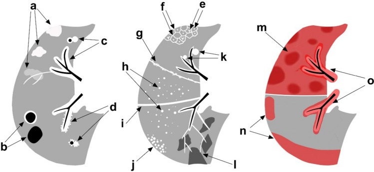
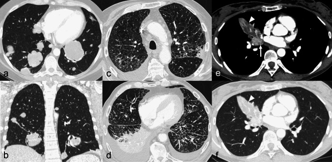
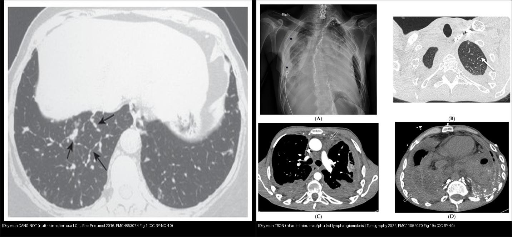
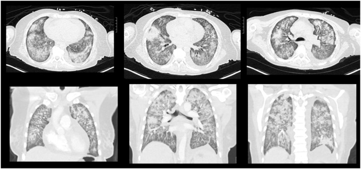
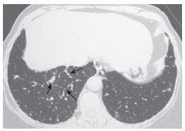
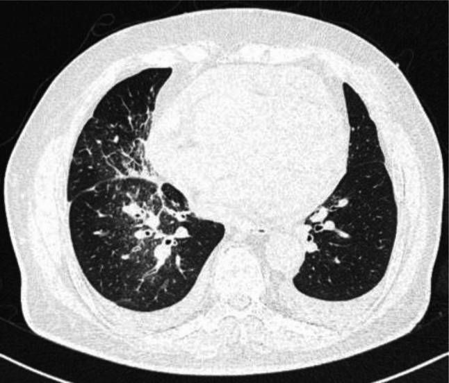
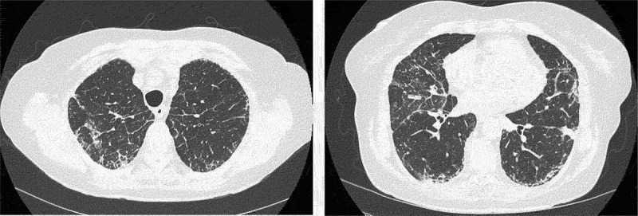
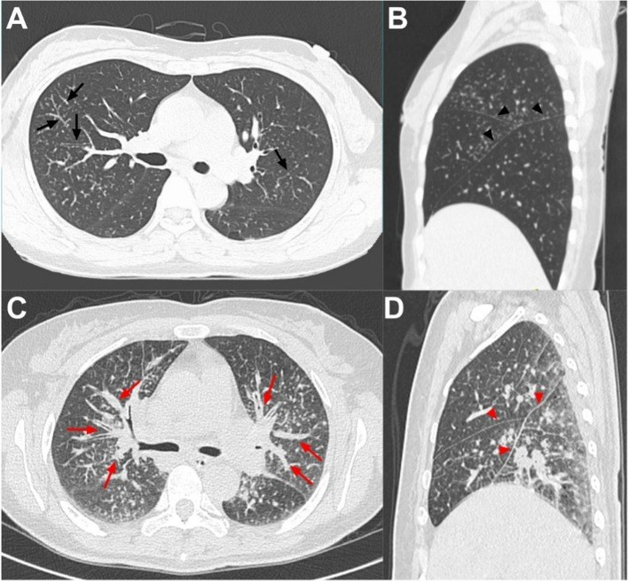

017 — Bạch mạch lan phổi (lymphangitic carcinomatosis) & đường mạch bạch huyết trên HRCT / Pulmonary lymphangitic carcinomatosis & the lymphatic pathways
Tags: pattern:day-vach-lien-tieu-thuy pattern:bach-mach vung:phoi protocol:HRCT incidentaloma:day-vach
Mức chắc chắn (certainty): tổng hợp y văn (literature synthesis) — nhóm tự biên từ y văn mở (ca nguyên văn Marchiori J Bras Pneumol 2016 CC BY-NC; Galbreath Respir Med Case Rep 2025 CC BY-NC-ND; Olesen Eur Clin Respir J 2024 CC BY-NC; Tang J Cardiothorac Surg 2026 CC BY-NC-ND; Ji Discover Oncology 2023 CC BY; Donuru Tomography 2024 CC BY).
1. Tổng quan bệnh học – cơ chế hình ảnh (TẠI SAO "vách dày")
- Giải phẫu nền: vách liên tiểu thùy (interlobular septum) là vỏ bao của tiểu thùy thứ cấp (secondary pulmonary lobule), chứa tĩnh mạch phổi + mạch bạch huyết. Mạch bạch huyết phổi chạy dọc tĩnh mạch, bao quanh phế quản–mạch máu (bronchovascular sheath), trong vách liên tiểu thùy và dưới màng phổi (Marchiori 2016).
- Bệnh học của bạch mạch lan phổi (pulmonary lymphangitic carcinomatosis — PLC): tế bào ung thư tới phổi theo đường máu, rồi lan ngược dòng trong mạch bạch huyết (retrograde lymphatic spread) và thâm nhiễm mô kẽ; hậu quả là giãn mạch bạch huyết + dày mô kẽ + phù → khó thở tiến triển (Tang 2026).
- TẠI SAO vách "dày": mạch bạch huyết bị tắc/nhồi đầy tế bào u → phù dịch + xơ hóa mô kẽ quanh vách → vách dày. Khi tế bào u xếp thành chuỗi trong lòng mạch bạch huyết, vách dày không đều, lấm tấm hạt → dày vách liên tiểu thùy dạng nốt (nodular ILST) — dấu hiệu đặc trưng nhất của PLC (Marchiori 2016).
- Ba kiểu dày vách liên tiểu thùy (ILST) trên HRCT (Donuru 2024):
- Trơn (smooth) — hay gặp nhất, ít đặc hiệu nhất: phù phổi, bệnh phổi do protein (PAP), lan bạch mạch của u, lymphangiomatosis.
- Dạng nốt (nodular): lan bạch mạch của u (PLC), sarcoidosis, bụi phổi silic (silicosis).
- Không đều/gai (irregular): xơ hóa mô kẽ — UIP/IPF, sarcoid xơ.
- Số liệu định lượng nằm lòng:
- Trong ca khó thở + có tiền sử ung thư, CT điển hình của PLC là chẩn đoán xác định — KHÔNG cần sinh thiết phổi (Marchiori 2016).
- Mô hình phân biệt PLC với sarcoid phổi ở BN ung thư (114 BN: 56 PS, 58 PLC; Ji 2023): 5 biến (vùng hạch bị ảnh hưởng, dày lan bao phế quản–mạch máu, dày vách liên tiểu thùy, tràn dịch màng phổi, tăng chuyển hóa dưới màng phổi) cho AUC 0,973 (KTC 95% 0,925–0,994), Se 87,50%, Sp 98,28%, PLR 50,75, NLR 0,13. Các ung thư gây PLC hay gặp nhất: vú và dạ dày.
- Kerley B 1–2 cm (vuông góc màng phổi, ngoại vi — tương ứng vách liên tiểu thùy dày) và Kerley A 2–6 cm (hướng về rốn phổi) là biểu hiện X-quang của ILST.
- PLC là di căn giai đoạn M1a, tiên lượng xấu (ca Galbreath 2025: vào hospice 1 tháng sau chẩn đoán; ca Tang 2026 sống được 41 tháng — hiếm gặp nhờ phẫu thuật giảm nhẹ + hóa–miễn dịch).

*Sơ đồ các mẫu tổn thương phổi trên CT: đám mờ (a), kén/hang (b), dày lan bao phế quản–mạch máu (c, d), dày kẽ quanh phế quản–mạch trung tâm tiểu thùy (e), dày vách liên tiểu thùy (f), dày màng phổi dạng nốt (g). Nguồn: Ji Y et al., Discover Oncology 2023, PMC10713927 Fig. 1, CC BY 4.0.*2. Mẫu hình + chẩn đoán phân biệt theo kiểu dày vách (Gamut)
- Hình thái vách là trục định hướng đầu tiên, nhưng bối cảnh + phân bố + tổn thương đi kèm mới quyết định (Donuru 2024):
- Dạng nốt (nodular) + cao tuổi/có ung thư + khó thở: nghi PLC hàng đầu (Marchiori 2016).
- Dạng trơn (smooth) hai bên đối xứng + tim to + tràn dịch: phù phổi (đáp ứng nhanh với lợi tiểu).
- Nốt dọc bạch mạch + hạch rốn hai bên + dấu galaxy: sarcoidosis (phải phân biệt với phản ứng giống sarcoid do điều trị ung thư).
- Dạng trơn + màng phổi/trung thất + dày kẽ lan tỏa ở người trẻ/trung niên: lymphangiomatosis / giãn mạch bạch huyết.
- Không đều (irregular) + tổ ong đáy–dưới màng phổi + giãn phế quản co kéo: xơ hóa UIP/IPF.
- Phân bố gợi ý PLC: có thể một bên hoặc bất đối xứng, ưu thế đáy phổi; kèm dày bao phế quản–mạch máu, nốt dưới màng phổi, tràn dịch màng phổi, hạch trung thất (Ji 2023).
- Đường lan khác của di căn phổi (Cicchetti 2025): di căn đường máu (nốt tròn ngẫu nhiên), lan bạch mạch (PLC), nội phế quản — phân biệt để định hướng sinh thiết và giai đoạn (PLC = M1a).

Các kiểu hình/kiểu phân bố của di căn tới phổi: nốt đặc ngẫu nhiên (di căn đường máu), lan bạch mạch và di căn nội phế quản. Nguồn: Cicchetti G et al., Radiol Med 2025, PMC12185656 Fig. 1, CC BY 4.0.3. Bảng so sánh phân biệt (ma trận đối chiếu)
| Thực thể (entity) | Hình ảnh điển hình (HRCT lát mỏng) | Chốt vào (rule-in) | Chốt loại (rule-out) | Gợi ý xác nhận |
|---|---|---|---|---|
| Bạch mạch lan phổi (PLC) | Dày vách dạng NỐT, dày bao phế quản–mạch máu, nốt dưới màng phổi, ± tràn dịch, phân bố bất đối xứng | Khó thở + tiền sử ung thư (vú/dạ dày) + vách dạng nốt | Phù hai bên đối xứng đáp ứng lợi tiểu → nghĩ phù phổi | CT điển hình + bối cảnh ung thư là đủ (không cần sinh thiết); TBB/cryobiopsy nếu mơ hồ |
| Phù phổi (edema) | Dày vách TRƠN, hai bên đối xứng, Kerley B, tim to, tràn dịch hai bên, mờ quanh rốn | Đối xứng + tim to + Kerley B + đáp ứng lợi tiểu nhanh | Bất đối xứng + vách dạng nốt → nghi PLC | Siêu âm tim, thử lợi tiểu, X-quang chuỗi |
| Sarcoidosis phổi | Nốt dọc bạch mạch (quanh phế quản–mạch, dưới màng phổi, dấu galaxy), hạch rốn hai bên, dày vách dạng nốt | Hạch rốn hai bên + galaxy + nốt nội bạch mạch | Phân bố một bên + tiền sử K + PLC điển hình → nghi PLC | Mô hình PET/CT (Ji 2023); sinh thiết hạch, ACE |
| Lymphangiomatosis / giãn bạch mạch | Dày vách TRƠN + nốt dọc bạch mạch + tràn dịch nhiều ngăn, dày màng phổi; tiến triển | Trơn + tràn dịch dạng ngăn + dày màng phổi | Dạng nốt + bối cảnh ung thư → nghi PLC | Mô bệnh, miễn dịch; gen (nếu trẻ) |
| Xơ hóa UIP/IPF | Dày vách KHÔNG ĐỀU + tổ ong đáy–dưới màng phổi + giãn phế quản co kéo, mất thể tích | Tổ ong + co kéo + mất thể tích | Dạng nốt + khối/tràn dịch bất đối xứng → nghi PLC | Theo dõi chuỗi; MDT; sinh thiết khi cần |

*Trái: vách dày dạng NỐT (nút) — kinh điển của lan bạch mạch ung thư (PLC). Phải: vách dày TRƠN (nhẵn) — hay gặp trong phù phổi / lymphangiomatosis (ví dụ diffuse pulmonary lymphangiomatosis). Kiểu dày + phân bố + tổn thương kèm là khóa phân biệt. Nguồn: Marchiori E et al., J Bras Pneumol 2016, PMC4853074 Fig. 1 (CC BY-NC 4.0) + Donuru A et al., Tomography 2024, PMC11054070 Fig. 19a (CC BY 4.0). Ảnh ghép letterbox, giữ nguyên bản.*4. Protocol chụp + hệ phân độ/điểm chuẩn hóa
- HRCT ngực lát mỏng 1–1,5 mm, thì hít vào (± thì thở ra để đánh giá ứ khí/mosaic); tái tạo MPR để theo vách liên tiểu thùy.
- X-quang ngực: tìm Kerley A/B (biểu hiện của vách liên tiểu thùy dày) — hữu ích tuyến đầu, ít nhạy.
- PET/CT toàn thân (FDG): vừa định vị di căn ngoài phổi, vừa giúp phân biệt PLC vs sarcoid phổi ở BN ung thư (mô hình Ji 2023: AUC 0,973; chú ý yếu tố tăng chuyển hóa dưới màng phổi và vùng hạch).
- Lấy mô: chỉ cần khi hình ảnh không điển hình — TBB/cryobiopsy qua nội soi phế quản (Olesen 2024 dùng cryobiopsy để xác chẩn), EBUS-TBNA khi có hạch; nếu CT điển hình + bối cảnh ung thư thì không cần sinh thiết (Marchiori 2016).
- Điều trị: PLC là bệnh toàn thân, giai đoạn M1a → điều trị giảm nhẹ/hệ thống (hóa trị, hóa–miễn dịch theo loại u); không có điều trị triệt căn, tiên lượng xấu (Tang 2026; Galbreath 2025).
- Hệ phân độ: không có "RADS" riêng cho PLC; dùng phân giai đoạn TNM (M1a) và Recist 1.1 để theo dõi đáp ứng.
flowchart TD
A["Dày vách liên tiểu thùy trên HRCT"] --> B{"Kiểu vách?"}
B -->|"TRƠN"| C{"Hai bên đối xứng + tim to + Kerley B?"}
C -->|"Có"| D["Phù phổi - thử lợi tiểu, siêu âm tim"]
C -->|"Không / bất đối xứng"| E["Nghĩ lan bạch mạch hoặc lymphangiomatosis"]
B -->|"DẠNG NỐT"| F{"Có tiền sử ung thư + khó thở?"}
F -->|"Có"| G["PLC - CT điển hình là ĐỦ; không cần sinh thiết"]
F -->|"Không"| H["Sarcoid / silicosis - sinh thiết hạch, ACE"]
B -->|"KHÔNG ĐỀU"| I["Xơ hóa mô kẽ - UIP/IPF; tìm tổ ong + co kéo"]
G --> J["Giai đoạn M1a - điều trị hệ thống/giảm nhẹ"]
5. Biến thể bình thường và cạm bẫy
- Cạm bẫy 1 — PLC giả bệnh mô kẽ (ILD): CT có thể chỉ là dày vách + lưới mờ + giãn phế quản co kéo giống ILD → chẩn đoán muộn (Galbreath 2025: khó thở dai dẳng, hình ảnh giống viêm/ILD; Olesen 2024: nghi ILD, cryobiopsy mới ra lymphangitis carcinomatosa).
- Cạm bẫy 2 — "trơn" KHÔNG loại trừ PLC: PLC có thể biểu hiện dày vách trơn (± đám đông đặc kèm theo, Galbreath 2025) chứ không luôn dạng nốt → đừng loại PLC chỉ vì vách nhẵn.

*Bệnh nhân ung thư vú di căn: CT ngực chỉ đông đặc mờ rải rác (multifocal airspace consolidation) kèm dày vách liên tiểu thùy TRƠN — hình ảnh không đặc hiệu, giống bệnh phổi khác; sinh thiết đường thở mới chẩn đoán PLC (HER2+). Đây là kiểu PLC "trơn" điển hình gây chẩn đoán muộn. Nguồn: Galbreath IM et al., Respir Med Case Rep 2025, PMC12722033 Fig. 1, CC BY-NC-ND 4.0 (nguyên bản).*- Cạm bẫy 3 — phản ứng giống sarcoid ở người đang điều trị ung thư: cả PLC và sarcoid phổi đều bắt FDG và đều dày vách/nốt bạch mạch → cần mô hình/ngữ cảnh (Ji 2023); đừng gọi "sarcoid-like" một cách dễ dãi khi chưa loại PLC.
- Cạm bẫy 4 — một bên/bất đối xứng: dày vách một bên hoặc bất đối xứng hướng nhiều tới PLC hơn là phù phổi (vốn đối xứng).
- Cạm bẫy 5 — không đáp ứng lợi tiểu: nếu hình ảnh "giống phù" mà không cải thiện với lợi tiểu, phải nghĩ tới PLC và tìm ung thư ẩn.
- Satisfaction of search: có sẵn một ổ di căn đặc rõ dễ che các dải/vách dày tinh tế → đọc vách liên tiểu thùy hệ thống theo từng vùng.
6. Tự lượng giá — Blind Quiz
Ca 1 — Nữ 52 tuổi, cắt dạ dày vì ung thư 1 năm trước, khó thở tăng dần. HRCT thấy vách dày ở đáy phổi phải. Chẩn đoán?

- Hỏi: vách dày kiểu gì (trơn/nốt/không đều)? Kiểu này gợi nhóm bệnh nào? Cần sinh thiết phổi không?
Bấm để hiện đáp án (findings + chẩn đoán)
- Dấu hiệu: dày vách liên tiểu thùy dạng nốt ở đáy phổi, rõ hơn ở đáy phổi phải (mũi tên). Đây là tổn thương chủ đạo (không kèm đông đặc/kính mờ nổi bật).
- Chẩn đoán: bạch mạch lan phổi (lymphangitic carcinomatosis — LC) từ ung thư dạ dày. Vì dày vách dạng nốt + khó thở + tiền sử K → trong bối cảnh này CT điển hình là đủ, không cần sinh thiết phổi.
- Nguồn ảnh: Marchiori E et al., J Bras Pneumol 2016, PMC4853074 Fig. 1, CC BY-NC 4.0 (nguyên bản).
Ca 2 — Bệnh nhân ung thư phổi có hang, khó thở và tràn dịch màng tim. CT ngực cho thấy gì ngoài khối u?

- Hỏi: các dấu hiệu mô kẽ? Phân bố chủ yếu ở đâu? Điều này đổi giai đoạn bệnh thế nào?
Bấm để hiện đáp án (findings + chẩn đoán)
- Dấu hiệu: dày kẽ trục (axial interstitial thickening) ưu thế phổi phải giữa–dưới, dày vách liên tiểu thùy, viêm bạch mạch do tắc dẫn lưu lympho, và tràn dịch màng phổi hai bên.
- Chẩn đoán: K phổi có hang tiến triển + bạch mạch lan phổi (PLC) — đây là di căn giai đoạn M1a, tiên lượng xấu (bệnh nhân được điều trị giảm nhẹ + hóa–miễn dịch, sống 41 tháng — trường hợp sống dài hiếm).
- Nguồn ảnh: Tang H et al., J Cardiothorac Surg 2026, PMC13479452 Fig. 2, CC BY-NC-ND 4.0 (nguyên bản).
Ca 3 — Nữ 78 tuổi, ho khan và khó thở nặng 3 tháng, X-quang có thay đổi kẽ hai bên. Sinh thiết lạnh đường thở cho kết quả ngoài dự đoán. Đó là gì?

- Hỏi: hình ảnh giống bệnh gì? Vì sao dễ chẩn đoán nhầm? Xác chẩn bằng cách nào?
Bấm để hiện đáp án (findings + chẩn đoán)
- Dấu hiệu: lưới không đều (irregular reticulation) (trái) và giãn phế quản co kéo + đông đặc dưới màng phổi (phải) — rất giống bệnh mô kẽ (ILD).
- Chẩn đoán: viêm bạch mạch ung thư (lymphangitis carcinomatosa) từ adenocarcinoma vú — xác chẩn nhờ cryobiopsy đường thở (không phải ILD).
- Bài học: hình ảnh "ILD" ở người lớn tuổi có thể là PLC; khi nghi ngờ phải sinh thiết để tránh chậm điều trị.
- Nguồn ảnh: Olesen SR et al., Eur Clin Respir J 2024, PMC11188942 Fig. 2, CC BY-NC 4.0 (nguyên bản).
Ca 4 — Đọc đối chiếu: bên nào là PLC, bên nào là phù/lymphangiomatosis? Dấu hiệu chốt?
- Hỏi: khác biệt về bề mặt vách? Kèm dấu hiệu nào giúp định hướng?
Bấm để hiện đáp án (findings + chẩn đoán)
- Trái = PLC: vách dày dạng nốt/nút (bề mặt lấm tấm do tế bào u trong mạch bạch huyết) — kinh điển của lan bạch mạch ung thư.
- Phải = vách dày TRƠN: hình nhẵn — gặp trong phù phổi / lymphangiomatosis (ví dụ diffuse pulmonary lymphangiomatosis, người 29 tuổi).
- Chốt: kiểu bề mặt vách (nốt vs trơn vs không đều) là bước định hướng đầu; bối cảnh ung thư + phân bố bất đối xứng nghiêng về PLC.
- Nguồn ảnh: Marchiori E et al., J Bras Pneumol 2016, PMC4853074 Fig. 1 (CC BY-NC 4.0) + Donuru A et al., Tomography 2024, PMC11054070 Fig. 19a (CC BY 4.0). Ảnh ghép letterbox.
Ca 5 — Bệnh nhân ung thư có nốt bạch mạch và hạch. Sarcoid hay PLC? Vì sao?

- Hỏi: dấu hiệu phân biệt trên CT? Vì sao cả hai đều bắt FDG?
Bấm để hiện đáp án (findings + chẩn đoán)
- Dấu hiệu: (A, B) sarcoid phổi — dày bao phế quản–mạch máu (mũi tên đen) + dày màng phổi dạng nốt (tam giác đen), bệnh nhân ung thư nội mạc tử cung 46 tuổi; (C, D) bạch mạch lan phổi (PLC) — bệnh nhân ung thư buồng trứng 54 tuổi, dày vách/nốt bạch mạch kèm tổn thương phù hợp di căn.
- Chẩn đoán: hai thực thể chồng lấp hình ảnh; mô hình PET/CT 5 yếu tố (Ji 2023) phân biệt được với AUC 0,973 / Se 87,5% / Sp 98,3% — cả hai đều bắt FDG, nên không dùng mức FDG đơn thuần, mà dùng vùng hạch + dày bao phế quản–mạch + vách + tràn dịch + tăng chuyển hóa dưới màng phổi.
- Nguồn ảnh: Ji Y et al., Discover Oncology 2023, PMC10713927 Fig. 2, CC BY 4.0.
Bài liên quan chéo
- 001 – Tổng quan hệ Ngực
- 011 – Tiểu thùy thứ cấp (cơ sở giải phẫu vách liên tiểu thùy)
- 021 – Đa nốt phổi (phân bố bạch mạch/ngẫu nhiên/trung tâm tiểu thùy)
- 032 – Kính mờ & lát đá (PAP, crazy-paving)
- 035 – Xơ mô kẽ UIP vs NSIP (dày vách KHÔNG đều, tổ ong)
- 033 – Phù phổi & ARDS (vách TRƠN, Kerley B, tim to)
- 016 – Nốt phổi ở bệnh nhân có tiền sử ung thư (di căn đơn độc vs nguyên phát)
Ảnh
- Tên file:
017_bach-mach_*; nguồn + giấy phép từng ảnh trongimages/CREDITS.md. - Ảnh CC BY 4.0 (PMC10713927, PMC12185656, PMC11054070) giữ nguyên bản; CC BY-NC (PMC4853074, PMC11188942) và CC BY-NC-ND (PMC12722033, PMC13479452) giữ nguyên bản; ảnh ghép dùng
tools/make_composite.py(letterbox nền đen, giữ aspect). - AuntMinnie: chỉ dẫn link (
sources.md).
Không dùng để chẩn đoán độc lập khi chưa có người hướng dẫn.